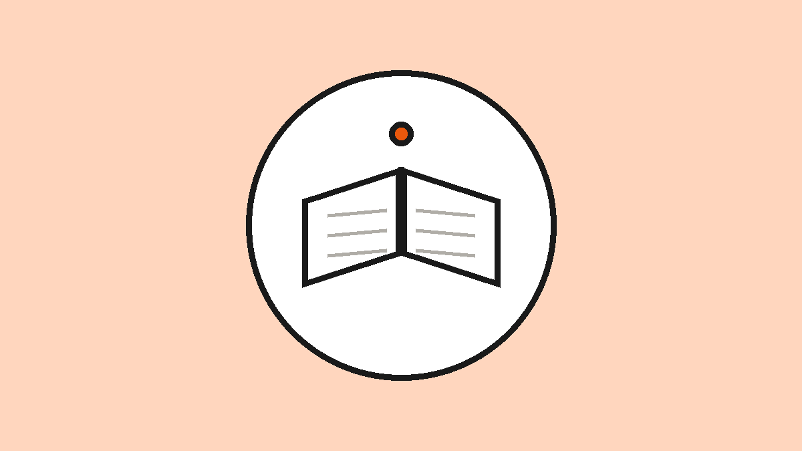

Why offline-first learning still matters
A lesson that stops working when the signal drops was never really working. Designing for the worst connection makes software better for every connection.

When we build a learning app, we assume the worst: no signal, a two-year-old phone, a data plan measured in megabytes, and a learner who may never come back if the first attempt is slow. That assumption is not pessimism. It is the most useful design constraint we have.
The learners most software forgets
A lot of education technology is built for the well-connected and then "localised" for everyone else. But the majority of learners who would benefit most from a good learning tool are not on a fast, always-on connection. For them, a network requirement is not an inconvenience — it is a wall.
Build for those learners first, and something interesting happens: the product also becomes better for everyone else. Offline-first software is faster, more private, and more durable, because it does not depend on a server being up or a connection being good.
What we build
Two of our projects take this idea seriously.
Luitra is a free, offline, dependency-free platform for learning Assamese — lessons, grammar, verb tables, the script, a dictionary, phrases, conversations, reading and a translator. It is a static site: no build step, no runtime dependencies, no server to fail.
SikBodo does the same for Bodo, with graded lessons, a 348-word dictionary, dialogues and an interactive practice arena. Also static, also offline-first.
How offline-first is actually built
- Static files, not a server. The whole app is HTML5, CSS3 and vanilla JavaScript. There is no backend in the critical path, so there is nothing to go down.
- No build step where we can avoid it. Source you can read and edit is source that will still work in five years.
- Small payloads. Everything ships tiny, because the target device and the target connection are modest.
- Installable and cacheable. Progressive web app patterns let the whole experience live on the device after a single load.
- The network is an enhancement. Online features — sync, accounts, analytics — are added on top, never required for the core.
Constraint as a design brief
We do not think of "works offline" as a feature to tick. We think of it as the honest baseline for anything meant to teach people in the real world, on the real hardware and connections they actually have. Build for the lowest common denominator, and you build something that lasts for everyone.
Comments
Powered by GitHub Discussions. Sign in with GitHub to join the conversation.